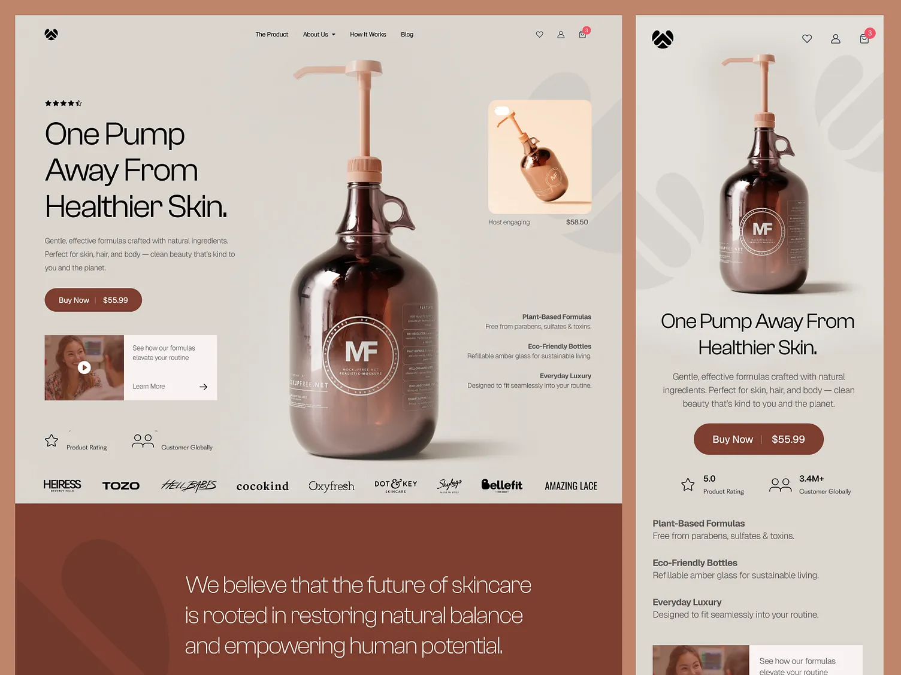
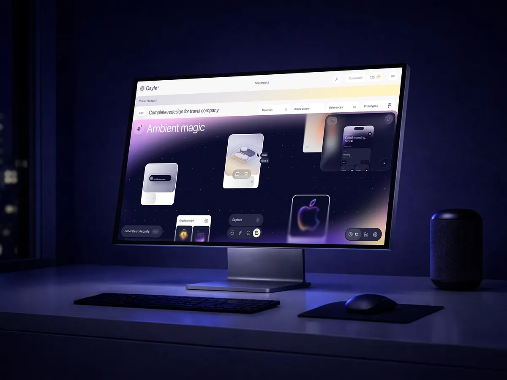

Формулировка и порядок блоков выстроены так, чтобы ценность услуги читалась сразу, без длинного расшифровывания.
О проекте
Страница, где всё подчинено ясности
Такой кейс должен выглядеть не просто красиво, а убедительно. Поэтому в основе лежит логика главной страницы портфолио: крупная мысль, строгая типографика, минимализм в карточках и понятные действия без лишнего декоративного слоя.
Вместо хаотичного набора секций здесь работает чистый сценарий: интерес, доверие, аргументы, контакт.
За счёт этого человек понимает, что видит не просто красивую обложку, а рабочий инструмент под обращение и продажи.
Разбор
Как эта подача помогает не терять внимание
В кейсе сохранён редакционный ритм: крупный первый экран, затем спокойные факты, потом разбор решения. Это помогает держать внимание без перенасыщения и не ломает общую эстетику портфолио.
На брейкпойнтах логика сохраняется: сначала пользователь видит главное, затем ключевые параметры проекта, и только потом детали. Из-за этого кейс остаётся удобным не только на десктопе, но и на мобильном.

